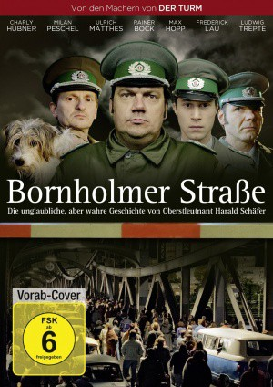

IMDB-Wertung: 7.0 / 10
IMDB-Wertung: 7.0 / 10  Metascore:
Metascore: 
A comic look at the fall of the Berlin Wall in November of 1989, told from the point of view of the German border guards at the checkpoint where it all started.
 IMDB-Wertung: 7.0 / 10 Metascore:
A comic look at the fall of the Berlin Wall in November of 1989, told from the point of view of the German border guards at the checkpoint where it all started.
Jahr: 2014
Dauer: 88 Minuten
FSK: 6
Land: Deutschland Studio: UFATonspuren:
Untertitel:
Auflösung: 1080p (1920x1080) Größe: 6277 MB
Regisseur: Christian Schwochow
Drehbuch: Gerhard Haase-Hindenberg
Soundtrack:
Darsteller:
 Milan Peschel als Ulrich Rotermund
Milan Peschel als Ulrich Rotermund Rainer Bock als Peter Arndt
Rainer Bock als Peter Arndt Thorsten Merten als Manfred
Thorsten Merten als ManfredDatei: X:\2014(A-F)\Bornholmer Straße (2014, FSK6, 1920x1080).mkv seit 12.07.2017
Festplatte: HD 2013(I-Z)-2014(A-Z)
 Es gibt insgesamt 119 Filme in der Gruppe '2014(A-F)'
Es gibt insgesamt 119 Filme in der Gruppe '2014(A-F)'